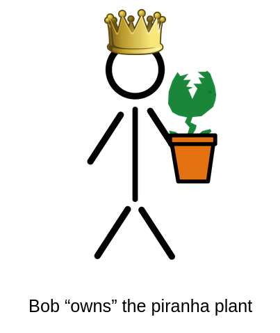
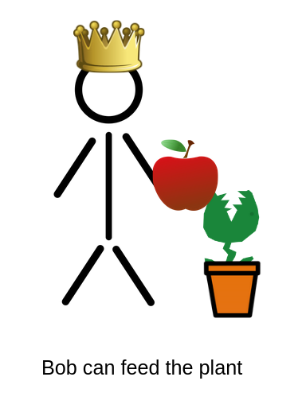
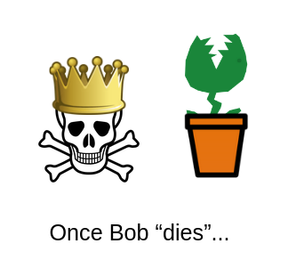
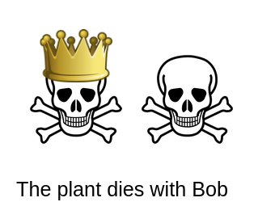
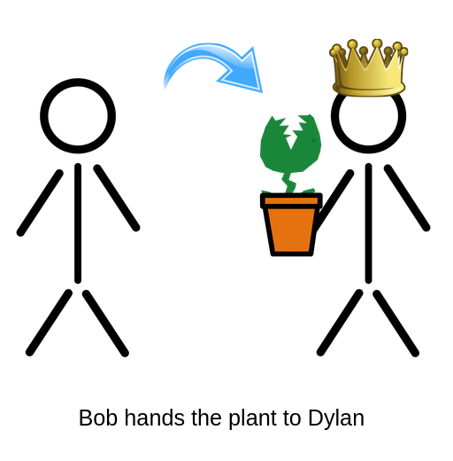
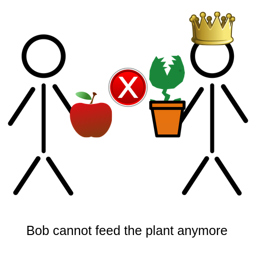
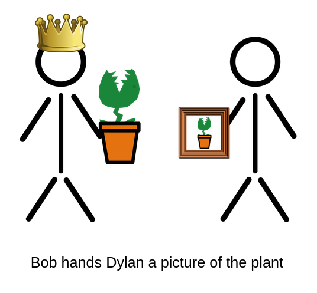
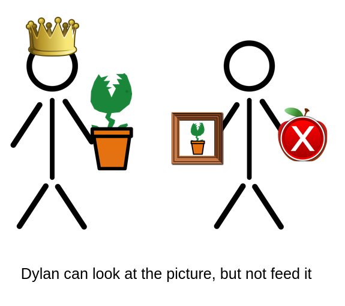
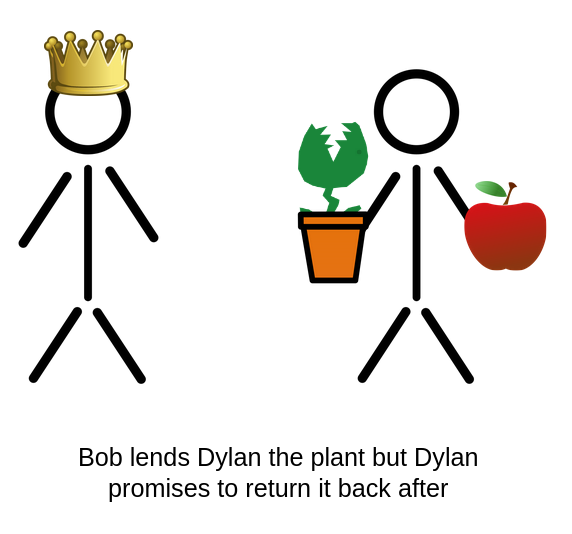

Welcome to Rust
So...what is Rust?
Rust is a general-purpose multi-paradigm systems-level programming language,
often used as an alternative to C and C++, with a focus on low level
performance without sacrificing memory safety, and it achieves this via
an idea called single ownership, which is enforced by the compiler through
the borrow checker.
Phew, a lot of that likely went over your head so let me paraphrase it for you.
Fast, Reliable, Productive - Pick Three
In short, Rust allows the programmer to write high level readable code while the
compiler does a lot of the heavy lifting, turning the source code into into
extremely performant machine code with speeds comparable to low level languages
like C and C++.
Considering Rust
If you haven't caught the memo yet, Rust is fast, REALLY fast, which makes it a great choice for programs that need to be performant, like operating systems, game engines, backend servers, databases, the list can go on and on.
You don't even necessarily have to make your entire program in Rust, you can keep writing your nice dynamically typed code and have it interact with performant Rust code in specific performance critical areas (the exact way you'd do this differs from language to language so I won't be going into detail here).
WASM?
Also, given Rust's minimal runtime, it tends to have a decently compact binary size, which currently makes it a good choice for Web Assembly for those of you into that.
Hello, World!
Alright, now that we've gotten the introductions out of the way, let's get right into some code examples.
Whenever you introduce a new language, you're basically expected to show a
Hello, World! example, so here it is:
fn main() { println!("Hello, World!"); }
Simple enough.
Note: the
!afterprintlndenotes thatprintlnis actually a macro, not a function. Macros are actually quite a complex topic in Rust, so they won't be covered in-depth here.
Running on local
If you want to run this on your own machine, you need to first install the
rust compiler and after pasting
the code in a file like main.rs, execute the following commands:
$ rustc main.rs
$ ./main
Or if on Windows:
> rustc main.rs
> .\main.exe
Variables
Variables in Rust can be declared with the let keyword:
fn main() { let x = 12; println!("{}", x); }
The println! macro can be used to print values by inserting double curly
braces {} into the format string.
Mutability
The following example won't run:
fn main() { let x = 12; println!("x is {}", x); x = 3; println!("x is now {}", x); }
In Rust, all variables are immutable by default. This means, when you declare
a variable with let, you can guarantee that code later on will never be able
to modify the original value no matter what.
To mark a variable is mutable, add the mut keyword:
fn main() { let mut x = 12; println!("x is {}", x); x = 3; println!("x is now {}", x); }
Arrays
Creating an array in Rust is straight forward:
fn main() { let x = [1, 2, 3, 4, 5]; }
To print an array, you need to format it in debug mode:
fn main() { let x = [1, 2, 3, 4, 5]; println!("{:?}", x); }
Indexing
Indexing and mutating works as expected:
fn main() { let mut x = [1, 2, 3, 4, 5]; println!("{}", x[1]); x[1] = 100; println!("{:?}", x); }
Fixed size
One limitation, however, is that arrays in Rust are fixed sized, meaning they
can never grow or shrink. To create a dynamically sized list of items in rust,
we need to use a Vec.
Vectors
Vectors in Rust can be created with the Vec::new function:
fn main() { let v: Vec<i32> = Vec::new(); }
To add elements to it, use the Vec::push method:
fn main() { let mut v = Vec::new(); v.push(1); v.push(2); v.push(3); println!("{:?}", v); }
vec! macro
For conciseness, you may wish to use the vec! macro.
fn main() { let v = vec![1, 2, 3]; println!("{:?}", v); }
Functions
Here's a function that takes a Vec as an argument:
fn main() { let v = vec![1, 2, 3]; print_first(v); } fn print_first(v: Vec<i32>) { println!("{}", v[0]); }
But, the code no longer compiles if we try to modify the vector after:
fn main() { let mut v = vec![1, 2, 3]; print_first(v); v.push(4); println!("{:?}", v); } fn print_first(v: Vec<i32>) { println!("{}", v[0]); }
To better understand the error and fix it, we need to first learn about ownership!
Ownership
Rust's poster child feature is ownership (and borrowing), and is the biggest hurdle that new Rustaceans must overcome before becoming truly comfortable with the language.
Ownership has three* main rules:
- Every value has an "owner"
- Every value can be "moved"
- Every value can be "borrowed"
I'll go in depth about each rule with an analogy and a code example along with it.
*Note: The three rules listed here are not entirely complete, as there are a few more rules pertaining to mutable vs immutable borrows, but it won't be covered here.
The Rust Book goes into more detail about the full rules of ownership if you're interested.
Owning
In Rust, every value has a single owner who is responsible for it.

fn main() { // The variable `bob` owns the vector let bob = vec![1, 2, 3]; }
The owner can do whatever they want with the value.

fn main() { let mut bob = Vec::new(); // The vector can be mutated bob.push(1); bob.push(2); println!("{:?}", bob); }
But, if the owner disappears...

fn main() { let mut bob = Vec::new(); bob.push(1); bob.push(2); } // Once `bob` goes "out of scope"
...the value will be disposed of.

fn main() { let mut bob = Vec::new(); bob.push(1); bob.push(2); // The value gets implicitly destroyed drop(bob); }
Note: in the case of
Vec, "destroying" it means deallocating the memory from the heap.
Moving
Ownership can be transfered.

fn take(v: Vec<i32>) { // Does stuff with `v` } fn main() { let bob = vec![1, 2, 3]; // Give bob's value to the `take` function take(bob); }
or
fn give() -> Vec<i32> { // Returns a `Vec` vec![1, 2, 3] } fn main() { let dylan = give(); }
The old owner can no longer access the value.

fn main() { let mut bob = vec![1, 2, 3]; take(bob); // The vector CANNOT be accessed anymore bob.push(4); println!("{:?}", bob); } fn take(v: Vec<i32>) { }
Borrowing
Values can be borrowed without transferring ownership.

// Function takes a reference as a parameter (&T) fn borrow(v: &Vec<i32>) { // Does stuff with `v` } fn main() { let mut bob = vec![1, 2, 3]; // Give a reference (&) to bob's value borrow(&bob); bob.push(4); // Still okay! println!("{:?}", bob); }
Immutable borrows (&) "can look, but cannot touch."

fn main() { borrow(&vec![1, 2, 3]); } fn borrow(v: &Vec<i32>) { println!("{:?}", v); // Okay! }
fn main() { borrow(&vec![1, 2, 3]); } fn borrow(v: &Vec<i32>) { v.push(1); // ERROR! }
Mutable borrows (&mut) CAN modify the value.

// Function takes a mutable reference as a parameter (&mut T) fn change(v: &mut Vec<i32>) { v.push(4); } fn main() { let mut bob = vec![1, 2, 3]; // Give a mutable reference change(&mut bob); // Okay! bob.push(5); println!("{:?}", bob); }
Note: if
bobwas not declared as amutvariable, it couldn't be mutably borrowed.This ensures that, to anyone reading the code, if a variable is not declared as mutable, it will NEVER be updated under any circumstance.
(this is technically untrue if we were to dive into the spooky world of unsafe Rust, but that's not going to be talked about here)
Fix me!
Let's go back to our previous broken code, but this time with a new understanding of ownership and borrowing.
Try to fix this code such that the function print_first borrows the vector
rather than taking the ownership of it.
// I'm editable!! fn main() { let mut v = vec![1, 2, 3]; print_first(v); v.push(4); println!("{:?}", v); } fn print_first(v: Vec<i32>) { println!("{}", v[0]); }
If you successfully did it, you should get the output:
1
[1, 2, 3, 4]
Options
In Rust, the Option<T> type is often used to refer to a value that
may or may not exist.
Option<T> may have two variations:
Some(T)for when a value is presentNonefor when a value is absent
fn main() { let mut maybe = Some(12); println!("{:?}", maybe); maybe = None; println!("{:?}", maybe); }
A built-in function in Rust that returns an Option<T> is Vec::pop, which
removes and returns the last value of a vector:
fn main() { let mut v = vec![1, 2]; println!("{:?}", v.pop()); println!("{:?}", v.pop()); println!("{:?}", v.pop()); }
Why not null?
A common question is "Why not just use
nulllike other languages?" and the biggest reason is to prevent "null dereferencing" orNullPointerExceptions.In a language like Java where objects can be set to
nullwhenever they want, you often don't know when you should have null-checks or not, so you usually just put them everywhere or risk a runtime exception.In Rust, however, that isn't necessary!
If a value is of type
T, you know it definitely exists, and so you have no fear of a possible null dereference.If a value is of type
Option<T>, the Rust compiler forces you to do the check because it may or may not be a valid value, meaning you run no risk of a runtime error.
Match
So, let's say we wanted to do something if a value is Some and another thing
if it is None, how do we do that? With pattern matching!
In Rust, the match keyword allows you to match a given value against a specified
list of patterns:
fn main() { let x = Some(12); match x { // Matching a specific value Some(10) => println!("10 is the magic number"), // Binding a value to a variable Some(n) => println!("We have the number {}", n), None => println!("We don't have a number"), } }
The above code is editable. Try changing the value of x or add your own patterns
and see what happens!
Alternative Patterns
The pipe | can be used to create a pattern that matches multiple things:
fn main() { let x = Some(12); match x { Some(10 | -10) => println!("10 is the magic number"), Some(n) => println!("We have the number {}", n), None => println!("We don't have a number"), } }
Wildcard
The wildcard pattern _ can be used to match anything:
fn main() { let x = Some(12); match x { Some(10 | -10) => println!("10 is the magic number"), _ => println!("We didn't get 10"), } }
Iterators
Iterators in Rust can be used to, well, iterate over a stream of values. Alternatively, they can be modified to create a new iterator or consumed to generate a single value.
.iter()
Arrays and vectors can both be easily turned into iterators with the iter method:
fn main() { let arr = [1, 2, 3]; arr.iter(); let v = vec![1, 2, 3]; v.iter(); }
Looping
Iterators can be looped over with the humble for-loop
fn main() { let arr = [1, 2, 3]; for i in arr.iter() { println!("{}", i); } }
Ranges
Simple range iterators can be created using the syntax n..m for all numbers
n to m non-inclusive:
fn main() { for i in 0..10 { println!("{}", i); } }
.sum()
Iterators have a sum method to add up all of the elements in the iterator:
fn main() { let result: i32 = (1..10).sum(); println!("{}", result); }
.map()
Iterators have a map method which applies a function to every element in the iterator:
fn main() { for i in (0..10).map(|n| n * n) { println!("{}", i); } }
Note:
|n| n * nis an example of an anonymous function in Rust.It could be roughly translated as:
fn main() {} fn square(n: i32) -> i32 { n * n }
Quiz time!
You hopefully now have a general understanding of what iterators are and what they can do. The next few examples will show of some more tricks, but don't just skim right through them. Try and predict what the output of them might be, and see if you're correct after taking a guess.
fn f(n: u32) -> u32 { (1..=n).product() } fn main() { println!("{}", f(1)); println!("{}", f(2)); println!("{}", f(5)); }
Note:
n..=mis how you'd create a range that goes fromntominclusive.
fn main() { let n = (0..100) .filter(|n| n % 2 == 0) .count(); println!("{}", n); }
fn main() { let values: Vec<i32> = (0..100) .map(|n| n * n) .collect(); println!("{}", values[1]); println!("{}", values[2]); println!("{}", values[20]); }
Note: in this case,
collectcollects all of the values of the iterator into aVec.
Appendix
Congrats! You've reached the end! These were all of the examples that I was able to fit in the final presentation (plus a little more).
If you want to learn more about Rust, I highly recomend reading The Rust Book. It goes in waaaay more detail than I did here, so do please check it out if you're interested.